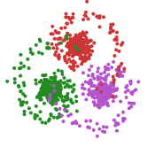

.gif) http://orcid.org/0000-0003-3310-7915
http://orcid.org/0000-0003-3310-7915
Snellius Building
Niels Bohrweg 1
2333 CA Leiden
Room number 232
m.r.schauer@math.leidenuniv.nl
University of Leiden Address Book
| 2015 – | Postdoc at the Mathematical Institute, University of Leiden. Projects: Causal Discovery from High-Dimensional Data in the Large-Sample Limit |
| 2014 – 2015 | Postdoc at the Korteweg-de Vries Institute for Mathematics, University of Amsterda m, VICI project Foundations of nonparametric Bayes procedures. |
| 2010 – 2014 | PhD candidate at the Delft Institute of Applied Mathematics, Delft University of Technology in cooperation with EURANDOM and su pport by the STAR cluster of the Dutch Science Foundation NWO. |
| 2004 – 2009 | Diplom-Mathematik at University of Hamburg, Department Mathematical Statistics and Stochastic Processes. |
Nonparametric Bayesian inference for diffusion processes.
Conditional diffusion processes / diffusion bridges.
Bayesian inference on graphs and causal inference.
With Frank van der Meulen, Shota Gugushvili, Peter Spreij: Nonparametric Bayesian estimation of a Hölder continuous diffusion coefficient. ( pdf), 2017.
Bayesian inference for discretely observed diffusion processes. Ph.D. Thesis. Delft University of Technology, 2015.
With Frank van der Meulen: Bayesian estimation of incompletely observed diffusions. http://arxiv.org/abs/1606.04082, Stochastics 2017 (to appear), doi:10.1080/17442508.2017.1381097 (pending).
With Frank van der Meulen, Jan van Waaij: Adaptive nonparametric drift estimation for diffusion processes using Faber-Schauder expansions. Statistical Inference for Stochastic Processes, 2017, 10.1007/s11203-017-9163-7.
With Frank van der Meulen: Bayesian estimation of discretely observed multi-dimensional diffusion processes using guided proposals. Electronic Journal of Statistics 11 (1), 2017, 10.1214/17-EJS1290.
With Frank van der Meulen, Harry van Zanten: Guided proposals for simulating multi-dimensional diffusion bridges. Bernoulli 23 (4A), 2017, pp. 2917–2950, 10.3150/16-BEJ833.
With Frank van der Meulen, Harry van Zanten: Reversible jump MCMC for nonparametric drift estimation for diffusion processes. Computational Statistics & Data Analysis 71, 2014, ISSN 0167-9473, 10.1016/j.csda.2013.03.002.
With Christos Pelekis: Network Coloring and Colored Coin Games. In: S. Alpern, R. Fokkink et al. (ed.): Search Theory: A Game Theoretic Perspective. Springer, 2013. ISBN-13: 978-146146824, 10.1007/978-1-4614-6825-7_4. Note: The proof therein is based on a uniform bound on the median of the number of sources (resp. sinks) in a graph with randomly oriented edges (randomly oriented graphs) of independent interest.
arXiv https://arxiv.org/a/0000-0003-3310-7915.html
http://orcid.org/0000-0003-3310-7915
Preferred names in citations are “Moritz Schauer” and “M. Schauer”.
Download .bib-file
Statistics for Structures Seminar.

A statistical toolbox for diffusion processes written in julia.
The package allows for simulation of univariate and multivariate stochastic processes in continuous time, and also from conditional diffusion processes (similar to Brownian bridges, namesakes of this package)
Several examples illustrate how the functions in this package can be used in Bayesian inference for drift and diffusion coefficients using the Metropolis-Hastings algorithm, see F. v. d. Meulen, M. Schauer: Bayesian estimation of discretely observed multi-dimensional diffusion processes using guided proposals. Electronic Journal of Statistics 11 (1), 2017, 10.1214/17-EJS1290.
Julia package for causal inference, graphical models and structure learning with the PC algorithm. This package contains for now the classical PC algorithm, tested on random DAGs by comparing the result of the PC algorithm using the *d*-separation oracle with CPDAGs computed with Chickering's DAG->CPDAG conversion algorithm (implemented as `dsep` and `cpdag` in this package). See the documentation for the implemented functionality.
See github.com/mschauer.